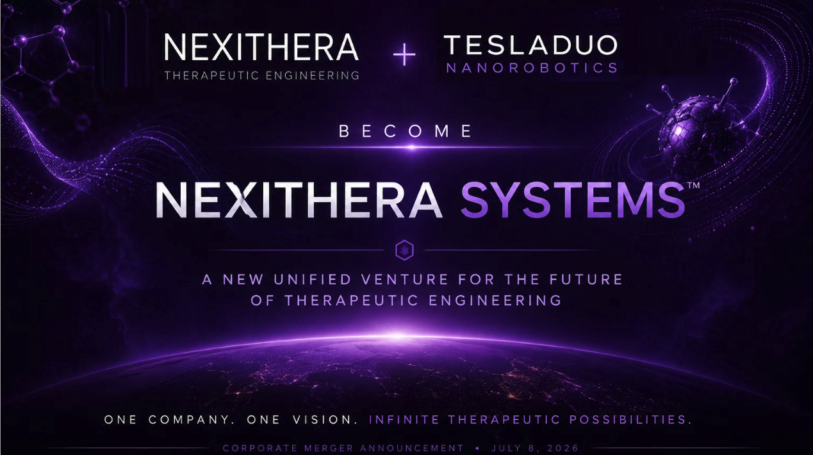

Strategic Article · Platform Announcement
NexiThera Systems™: A Full-Stack Therapeutic Engineering Platform Built on EpistemicOS™ and TherapeuticOS™
Integrating NexiThera’s cognition-driven therapeutic architecture with TeslaDuo Nanorobotics’ nanoscale therapeutic systems and biosensing capabilities.

Paris, France / Delaware, USA — July 8, 2026 — NexiThera™ today announced the formation of NexiThera Systems™, a unified therapeutic engineering venture designed to connect artificial intelligence, scientific reasoning, therapeutic discovery, formulation, delivery, nanoscale therapeutic systems, diagnostics, and translational readiness under one coherent operating architecture.
The new venture brings together NexiThera’s therapeutic engineering ecosystem — including EpistemicOS™, TherapeuticOS™, ChronoThera™, and its internal Forge™ engine — with TeslaDuo Nanorobotics™, a frontier program focused on programmable nanoscale therapeutic systems, DNA origami, molecular-machine concepts, and biosensing intelligence.
Together, these capabilities form a modular full-stack therapeutic engineering platform designed for the next era of AI-enabled medicine.
From AI Discovery to Therapeutic Engineering
AI has already changed how scientists think about molecular design, target discovery, structural biology, biomedical literature, and candidate prioritization.
But discovery is only the beginning.
The harder question is whether promising hypotheses can become disciplined therapeutic programs that survive biology, safety, formulation, delivery, translation, clinical uncertainty, and regulatory scrutiny.
That is the purpose of NexiThera Systems™.
Its core thesis is that the future of AI in medicine will not be defined only by smarter models, but by smarter therapeutic systems: systems capable of transforming reasoning into evidence-governed, reproducible, continuously improving therapeutic engineering.
One Architecture: Cognition, Engineering, Translation
At the foundation of NexiThera Systems™ is EpistemicOS™, the verifiable cognition infrastructure designed to support recursive scientific reasoning, evidence provenance, contradiction handling, model-agnostic intelligence orchestration, epistemic memory, and governed decision traces.
Built on top of EpistemicOS™ is TherapeuticOS™, the therapeutic engineering operating system.
TherapeuticOS™ converts cognition into therapeutic action through modular services for evidence management, candidate reasoning, safety governance, translational readiness, formulation and delivery, nanoscale therapeutic-system design, diagnostics, and clinical foresight.
The user-facing layer is Forge™, the therapeutic engineering workbench through which teams interact with programs, evidence, candidates, module outputs, reasoning traces, and governed decisions.
EpistemicOS™ reasons. TherapeuticOS™ engineers. Forge™ makes it usable.
Inside TherapeuticOS™
TherapeuticOS™ is designed as a modular operating system for therapeutic engineering. Its current and planned service layers include:
TherapeuticOS™ ├── Evidence OS Services ├── Candidate OS Services ├── Guardian Therapeutic Policies ├── Translational Readiness Services ├── ChronoThera™ Advanced Formulation & Delivery Module ├── TeslaDuo NR™ Nanoscale Therapeutic Systems Module ├── TeslaDuo Dx™ Biosensing & Diagnostics Module └── Clinical Foresight Services
Each module contributes to a different part of the therapeutic engineering lifecycle.
- Evidence OS Services organize literature, datasets, assay outputs, biological assumptions, experimental findings, contradictions, and translational signals into evolving evidence structures.
- Candidate OS Services represent therapeutic candidates as structured decision objects connected to their mechanism, modality, safety profile, delivery assumptions, SAR trajectory, biomarkers, manufacturability, and clinical-differentiation logic.
- Guardian Therapeutic Policies provide the governance layer that determines when a concept should advance, pause, escalate, or be rejected based on evidence quality, uncertainty, safety, and translational risk.
- Translational Readiness Services evaluate whether a therapeutic concept is not only scientifically compelling, but developmentally coherent.
- ChronoThera™ brings formulation, delivery, PK/PD reasoning, controlled release, route-of-administration strategy, manufacturability, and patient-centric design into the therapeutic reasoning loop.
- TeslaDuo NR™ expands the system toward programmable nanoscale therapeutic systems, including DNA origami concepts, molecular-machine design, targeted delivery logic, payload control, structural stability reasoning, and translational feasibility gates.
- TeslaDuo Dx™ supports biosensing and diagnostic intelligence, including biomarker panels, disease-signal reasoning, monitoring logic, diagnostic-readiness evaluation, and feedback loops between detection and intervention.
- Clinical Foresight Services connect therapeutic concepts to endpoint logic, biomarker-to-clinical-signal mapping, patient-population assumptions, comparator reasoning, and trial-readiness evaluation.
Together, these modules allow TherapeuticOS™ to function not as a static platform, but as an evolving therapeutic operating system.
TeslaDuo Nanorobotics Inside TherapeuticOS™
The integration of TeslaDuo Nanorobotics™ adds two frontier modules to TherapeuticOS™.
TeslaDuo NR™ — Nanoscale Therapeutic Systems
TeslaDuo NR™ focuses on programmable nanoscale therapeutic-system design, including DNA origami, molecular-machine concepts, targeted delivery architectures, payload-control logic, structural simulation, and feasibility assessment.
Its role inside TherapeuticOS™ is to help reason through questions such as:
- Can a nanoscale therapeutic structure remain stable enough to be useful?
- Can it deliver or present a payload in the intended biological context?
- What immune, safety, clearance, or manufacturing risks appear early?
- Which assumptions require experimental validation before progression?
- How should nanoscale therapeutic concepts be governed before translation?
The goal is not to overclaim nanorobotics. The goal is to make nanoscale therapeutic design scientifically disciplined, evidence-linked, and governed from the beginning.
TeslaDuo Dx™ — Biosensing and Diagnostics
TeslaDuo Dx™ focuses on AI-assisted biosensing and diagnostic concept engineering.
Its role is to help connect therapeutic design with measurable biological signals. It supports reasoning around biomarkers, sensor concepts, disease-state detection, monitoring logic, assay strategy, and diagnostic-readiness evaluation.
This creates a tighter loop between therapeutic intervention and biological measurement. For NexiThera Systems™, that loop is essential.
Therapeutic engineering does not only ask what to build. It asks how to know whether what we build is working.
Why This Matters
Therapeutic development remains expensive, uncertain, and biologically unforgiving. Many failures occur not because scientists lacked intelligence, but because risk surfaced too late.
TherapeuticOS™ is designed to move risk earlier.
- Earlier evidence scrutiny.
- Earlier delivery reasoning.
- Earlier safety gating.
- Earlier translational alignment.
- Earlier diagnostic feedback.
- Earlier clinical-readiness assessment.
The objective is not to make drug development easy.
Nothing serious in biology is easy. Biology has made an entire career out of humiliating overconfident PowerPoints.
The objective is to make therapeutic development more rational, more traceable, more integrated, and more capable of learning.
A Platform Built to Grow
TherapeuticOS™ is modular by design.
Today, the architecture includes discovery reasoning, evidence services, formulation and delivery, nanoscale therapeutic systems, diagnostics, clinical foresight, and governance.
Tomorrow, it can expand to support additional therapeutic modules, including:
Future TherapeuticOS™ Modules ├── Gene Therapy Engineering ├── Cell Therapy Orchestration ├── Immuno-Engineering ├── RNA Therapeutics ├── Microbiome Therapeutics ├── Regenerative Medicine └── Future modalities not yet imagined
The operating-system model matters because therapeutic science will not stand still. Neither should the infrastructure.
TherapeuticOS™ is designed to evolve with the science.
The NexiThera Systems™ Thesis
NexiThera Systems™ is built around a simple belief:
Better models will keep emerging. Better therapeutic systems must be engineered.
As foundation models, biomolecular AI systems, scientific agents, and experimental automation continue to advance, the need for verifiable cognition infrastructure becomes more important, not less.
The winning platforms will be those capable of integrating better models, preserving provenance, governing decisions, learning from evidence, and translating intelligence into therapeutic action.
That is what NexiThera Systems™ is being built to do.
- EpistemicOS™ provides verifiable cognition.
- TherapeuticOS™ transforms cognition into therapeutic engineering.
- Genovate™ makes the architecture usable.
- ChronoThera™ brings formulation and delivery into the reasoning loop.
- TeslaDuo NR™ extends the system toward nanoscale therapeutic design.
- TeslaDuo Dx™ connects therapeutic concepts to biosensing and diagnostics.
- Guardian policies keep decisions governed.
- Translational readiness services keep the path to patients in view.
This is not merely an AI platform. It is a therapeutic engineering operating architecture.
Because reasoning discovers possibilities.
TherapeuticOS™ engineers therapies.